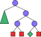
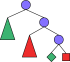
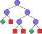
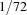

6 The Menu Bar
All operations available with the Explorer can be chosen from menu entries. Some operations can invoked by keyboard accelerators. The most important operations can be invoked with the mouse.
Keyboard accelerators are shown to the right of menu entries. Accelerators beginning with C- require the control-key to be pressed together with the key. Operations available via mouse buttons are tagged by a small figure to the left of the explanation.
6.3 The Search Menu
Operations available from this menu explore the search tree.
Explores the search tree starting from the current node up to the next solution. Exploration can be stopped as described in Section 6.1.
Explores the entire current subtree. Exploration can be stopped as described in Section 6.1.
Performs a single distribution step starting from the current choice node.
|  |
|
|  |
6.4 The Nodes Menu
Operations available from this menu allow to select and invoke actions.
Shows a sub menu from which an information action can be selected. Chapter 7 describes how new actions can be defined.
Invokes the currently selected information action (see above) on the current node.
Shows a sub menu from which a compare action can be selected. Chapter 7 describes how new actions can be defined.
Selects the current node as compare node. Selecting a different node draws an arrow from the compare node to the new current node.
Deselects the compare node and deletes the arrow.
Applies the currently selected compare action to the compare node (i.e., the node from which the arrow issues) and the current node.
Shows a sub menu from which a statistics action can be selected. Chapter 7 describes how new actions can be defined.
Applies the currently selected statistics action to the current node.
|
|  |
|
|
|
|
|
|
6.5 The Hide Menu
This menu features operations for hiding and unhiding subtrees. The drawing of subtrees during unhiding can be stopped as described in Section 6.1.
If the current subtree is hidden, it gets unhidden. If the current subtree is not hidden, it gets hidden. Unhiding is not recursive: If the hidden tree contains hidden subtrees itself, they remain hidden.
All completely explored subtrees in the current subtree that do not contain a solution are hidden.
All subtrees of the current subtree with the exception of completely explored subtrees not containing a solution are unhidden.
All subtrees of the current subtree are unhidden.
|  |
|
|  |
|
| 
| Hide/Unhide
| 
| Hide/Unhide
|
|
Hide Failed
| 
| Unhide But Failed
| 
| Unhide All
| 
|
Figure 6.1: Example for hiding and unhiding subtrees.
The different operations to hide and unhide trees are illustrated by an example in Figure 6.1. All operations are invoked with the entire tree as current subtree.
6.6 The Options Menu
This menu contains access to dialogs from which the Explorer can be configured.
Creates a dialog to set options for the Explorer's search engine.

In the Search entry the kind of recomputation used during next and all solution search (see also Section 6.3) can be entered. Entering none means that in each distribution step during search a space is stored. Entering full means that no spaces at all are stored during search. Entering a number
 means that only in each -th distribution step a space gets stored. Roughly, with a recomputation distance of , the time needed during search is increased by a factor of and memory occupied is decreased by a factor of .
means that only in each -th distribution step a space gets stored. Roughly, with a recomputation distance of , the time needed during search is increased by a factor of and memory occupied is decreased by a factor of . In the Information entry the kind of recomputation used for accessing the information attached to nodes. Entering none means that each choice and solved node stores a computation space. Entering full means that only the top node stores its corresponding computation space. The space of any other node is recomputed by redoing all distribution steps. The number of required distribution steps thus depends on the depth of the node. Entering a number
means that only nodes at a depth 1,  ,
,  , ... store a computation space. Thus, in the worst case the access to a node's space recomputes
, ... store a computation space. Thus, in the worst case the access to a node's space recomputes  distribution steps.
distribution steps. Selecting Full Recomputation in Failed Subtrees means that in subtrees that are explored completely and do not contain a solution, no spaces are stored.
Pressing the buttons Normal, Large, and Huge enter values to the recomputation entries. Normal is the default setting for scripts which do not contain very much propagators (i.e., about a few hundred). The other two buttons suggest values for scripts with more propagators or deep search trees.
Creates a dialog to set options used for the drawing of the search tree.

The entries in the dialog are self-explanatory.
Creates a dialog to set options used for dumping the search tree in postscript format (see also Section 6.1).

The format of the string to be entered in the Maximal size field must be as follows:
num dim x num dim
where dim must be one of i (inch), c (centimeter), m (millimeter), or p (point, that is  inch).
|
|
|
The options can also be configured by sending a message to Explorer.object, for details see Chapter 8.